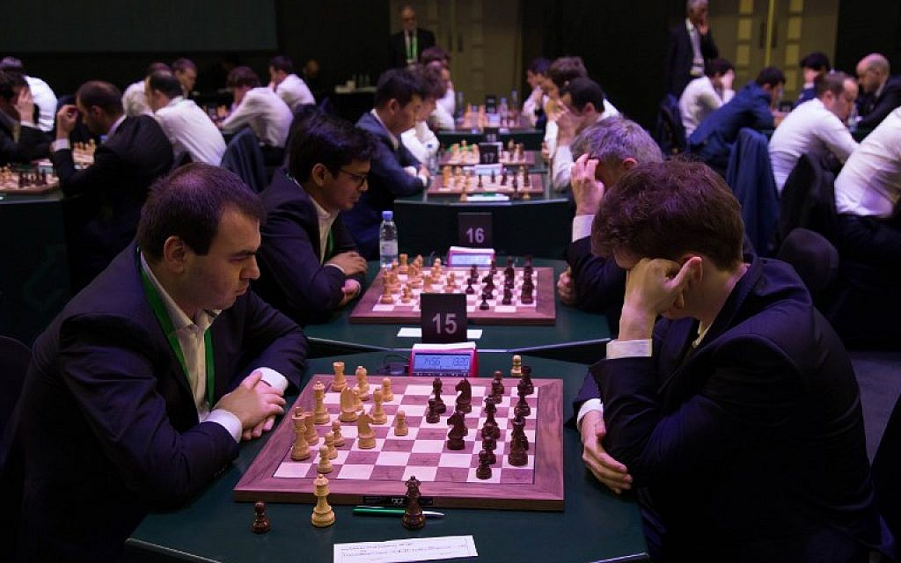
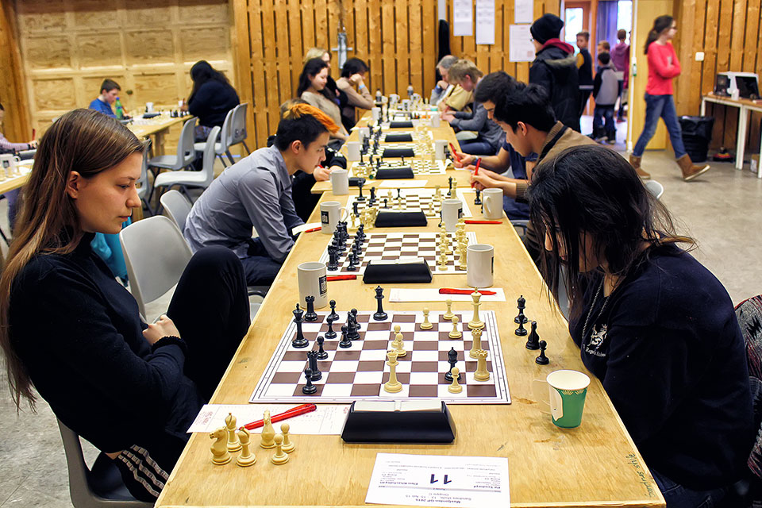
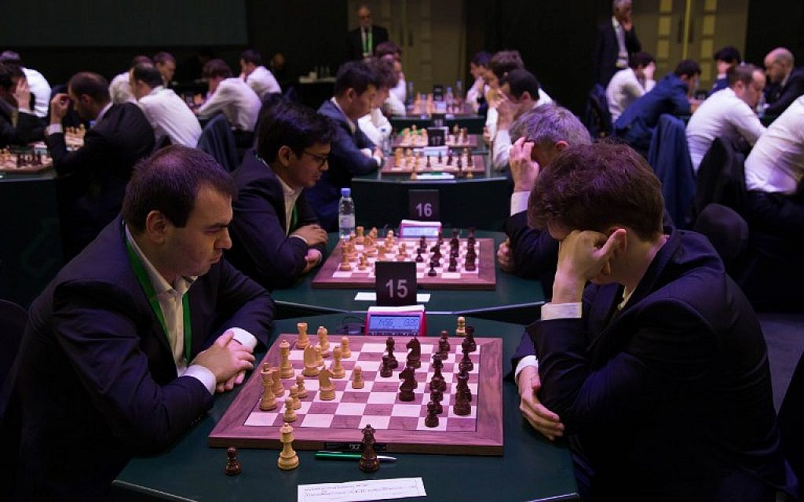
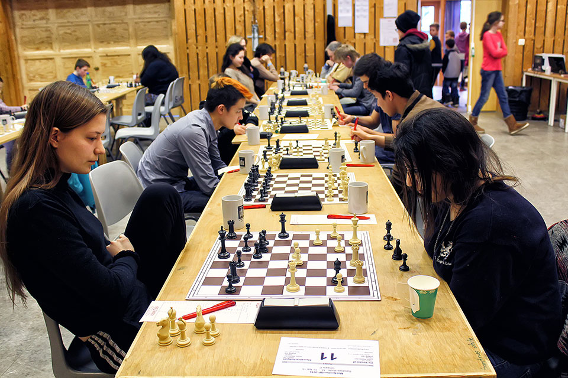

MaChung Chess Competition
MaChung Chess Competition adalah sebuah perlombaan catur tingkat internasional yang diadakan oleh UKM Catur.
Perlombaan ini terdiri dari 3 tier, yaitu:
1. youngster(usia 10-15)
2. youth(usia 16-21), dan
3. senior (usia 21 keatas)
Pada ajang youngster, pemain berusia 10-15 beradu 1 sama lain untuk meraih juara 1. Juara yang dicari ada 3 juara dengan hadiah berupa uang tunai dan sertifikat bertaraf internasional.

Pada ajang youth, pemain berusia 16-21 tahun beradu 1 sama lain untuk meraih juara 1. Juara yang dicari ada 3 juara. Berbeda dengan youngster, peserta youth mendapatkan hadiah yang sama namun dengan tambahan berupa hadiah tiket liburan ke Amerika Serikat.

Pertandingan pada usia senior merupakan pertandingan yang live dan ditayangkan diseluruh dunia di saluran televisi kerjasama. Hadiah yang diraih pun memiliki nominal yang lebih besar
Perlombaan ini terdiri dari 3 tier, yaitu:
1. youngster(usia 10-15)
2. youth(usia 16-21), dan
3. senior (usia 21 keatas)
Pada ajang youngster, pemain berusia 10-15 beradu 1 sama lain untuk meraih juara 1. Juara yang dicari ada 3 juara dengan hadiah berupa uang tunai dan sertifikat bertaraf internasional.

Pada ajang youth, pemain berusia 16-21 tahun beradu 1 sama lain untuk meraih juara 1. Juara yang dicari ada 3 juara. Berbeda dengan youngster, peserta youth mendapatkan hadiah yang sama namun dengan tambahan berupa hadiah tiket liburan ke Amerika Serikat.

Pertandingan pada usia senior merupakan pertandingan yang live dan ditayangkan diseluruh dunia di saluran televisi kerjasama. Hadiah yang diraih pun memiliki nominal yang lebih besar